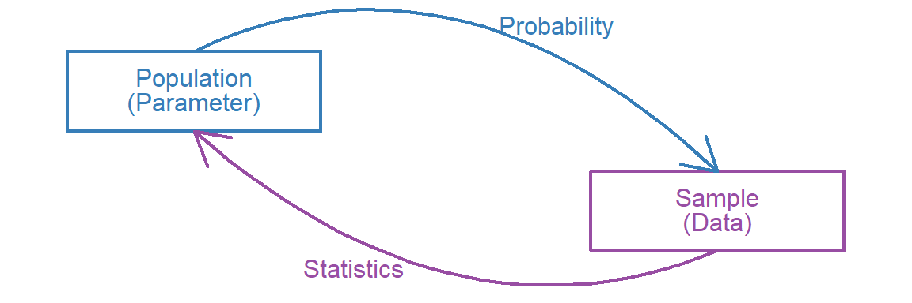
Lecture 6: Sampling Distributions
Probability \(\rightarrow\) Data
- We began this class by talking about how statistics like means and standard deviations help us summarize data
- We next looked at how the rules of probability govern how data are generated
- Now we are going to talk about the rules of probability govern how statistics are generated
Ordinary vs Sampling distributions
Ordinary Distribution: A probability distribution for how data are generated one datapoint at a time
Sampling Distribution: A probability distribution for how statistics are generated one sample at a time
We’ve actually already seen an example of a sampling distribution: The binomial distribution represents how proportions of successes are distributed in samples of a fixed size for a given probability of success
For binary data, proportions are means, so the binomial distribution is really a sampling distribution of means for binary data
Back to Bears

Sampling Gummy Bears
- \(1/5\) gummy bears are pineapple
- If we randomly sample gummy bears, what will the distribution of proportions (sample means) of look like for repeated samples of….
- ….5
- ….10
- ….25
- ….100
Simulating Gummy Bears
We can simulate this procedure in R and look at the results
N <- 5
set.seed(21)
(successes <- rbinom(n = 1, size = N, prob = .2))[1] 2To get the proportion we just divide the number of successes by the sample size
successes/N[1] 0.4Simulating Again
We can repeat the process and see how the results change
set.seed(2513)
(successes <- rbinom(n = 1, size = N, prob = .2))[1] 2successes/N[1] 0.4…Again
set.seed(643)
(successes <- rbinom(n = 1, size = N, prob = .2))[1] 3successes/N[1] 0.6…And Again
set.seed(77865)
(successes <- rbinom(n = 1, size = N, prob = .2))[1] 0successes/N[1] 0Better yet, let’s graph the cumulative proportions (sample means) as we repeatedly sample
Repeated Draws (N = 5)
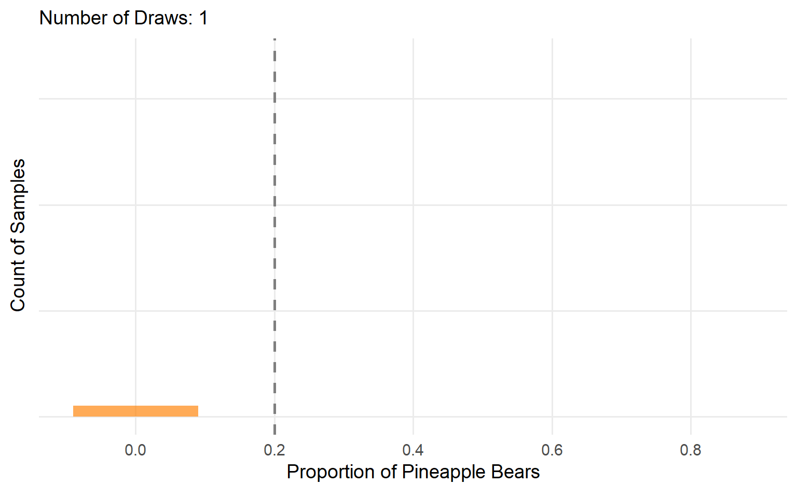
Now let’s bump up the sample size
Repeated Draws (N = 10)
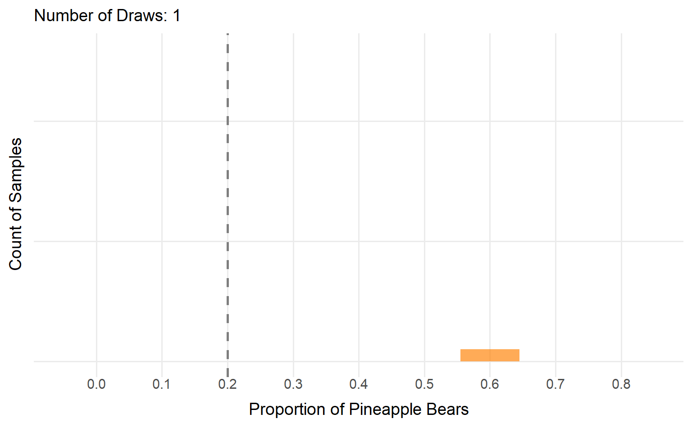
Again….
Repeated Draws (N = 25)
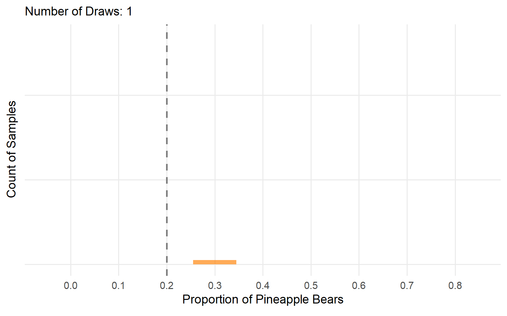
And again….
Repeated Draws (N = 100)
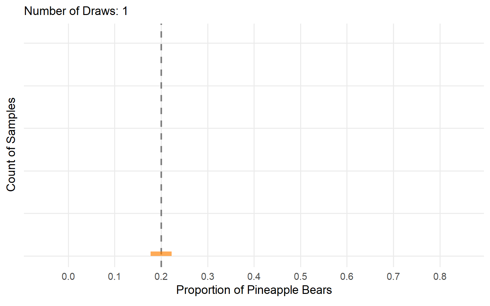
Thoughts?
Comparing Sample Sizes
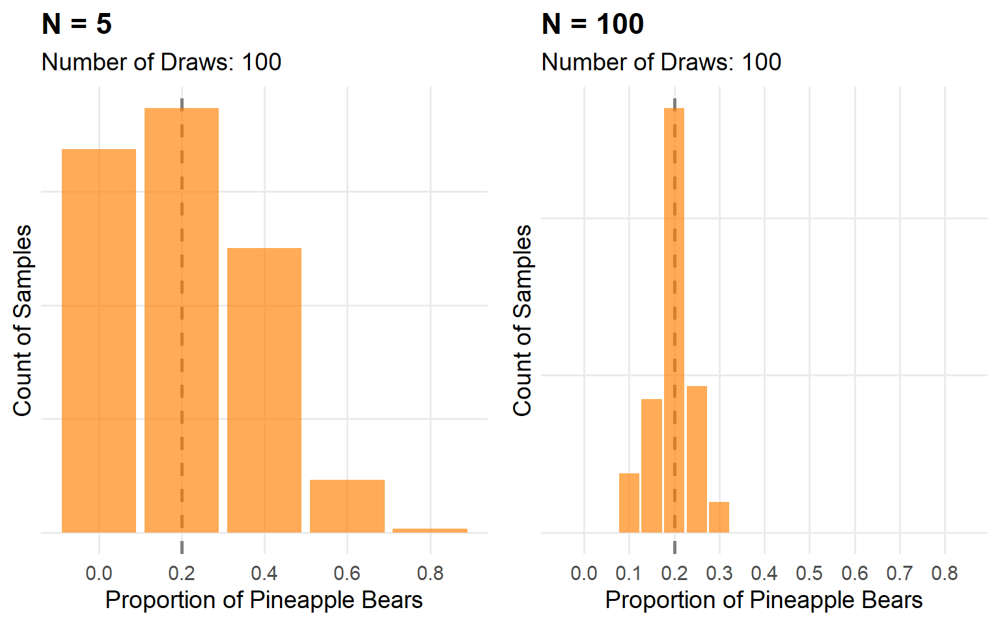
What about now?
The Central Limit Theorem
As \(N\) increases:
- Sampling distribution becomes narrower
- Sampling distribution becomes more symmetrical/bell-shaped
- Applies to (nearly) all sampling distributions
- Exception: Some distributions do not have finite variance
- These are cases where outliers that are orders of magnitude larger than the mean happen more often than would be expected
- “Heavy tailed” distributions (e.g. Cauchy)
- Otherwise, as \(N\) (sample size) \(\rightarrow \infty\)
- Mean of sample statistics converges on population parameter
- SD of sample statistics = standard error = \(\sigma / \sqrt{N}\)
- Sampling distribution becomes increasingly
How Does This Help?
- For most statistics we care about, if we have a large enough sample, the distribution of those statistics in repeated samples becomes normal in large enough sample sizes
- The more symmetrical the ordinary probability distribution, the more normal the sampling distribution
- The more skewed the ordinary distribution, the less normal the sampling distribution
- If we can assume statistics are normally distributed, we can unlock a lot of ways to make inferences using some well-known properties of the normal distribution
The Normal Distribution
\[f(x) = \frac{1}{\sqrt{2\pi \sigma^2}}e^{\frac{(-x-\mu)^2}{2\sigma^2}}\]
Parameters
- \(\mu\): Mean
- \(\sigma^2\): Variance
- aka \(\sigma\): Standard deviation
Normal Densities
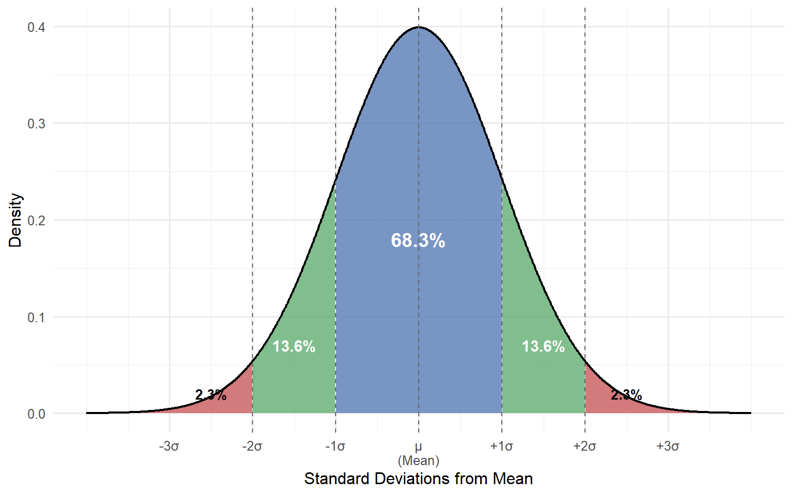
For example, we can “slice up” the normal distribution into densities within 1 and 2 standard deviations
Normal Distribution Properties
- 68% of observations are within 1 SD of the mean
- 96% of observations are within 2 SD of the mean
Any number that is more than 2 SDs from the mean would show up infrequently in this distribution
- Not never! But it would be uncommon
- If we know what the mean and SD of our sampling distribution are, it can let us say something about how how (un)likely it would be to see a statistic we collected in our sample.
Sampling Scorers
Let’s imagine:
- I sample a group of 44 NBA basketball players
- On average, they score 14.5 points per game
- I want to test the hypothesis that on average, the population I sampled from scores 12 points per game
- In the population, the standard deviation of basketball player points per game is 6
- 14.5 is not 12! But how do I know how likely or unlikely this statistic would be in my sampling distribution?
Standard Errors
A standard error is our term for the standard deviation of a sampling distribution.
A few minutes ago I mentioned that As \(N\) increases a sampling distribution becomes narrower. In fact, under the CLT, we know exactly how much narrower it becomes for the sampling distribution of the mean!
\[\text{Standard Error (SE) of the mean} = \frac{SD}{\sqrt{N}}\]
More precisely, the squared standard error is the variance of the ordinary distribution proportional to the sample size
\[\text{SE}^2 = \frac{\sigma^2}{N}\]
Standard Error of Scorers
Therefore, if I know my population of NBA scorers has a standard deviation of 6, a sampling distribution of means for \(N = 44\) from this population would have
\[SE = \frac{6.5}{44} = 0.90\]
This means, if my population has a mean of 12, I would expect
- 68% of samples to have a mean in the range of \(12 \pm 0.90 = [11.10, 12.90]\)
- 96% of samples to have a mean in the range of \(12 \pm 2 \times 0.90 = [10.20, 13.80]\)
\(Z\)-transformations
We can also transform our statistic into a \(Z\)-score for our hypothesized sampling distribution
- \(Z\)-score transformation: converting raw data or statistics into standard deviation units
- In our case, we are going to transform our sample mean, \(\bar{x}\), based on the mean and standard deviation (standard error) for our proposed sampling distribution
- \(Z = \frac{\bar{x} - \mu}{\text{SE}} = \frac{14.5 - 12}{0.90} = 2.78\)
Interpretation: Our sample mean is 2.78 SEs (SDs) larger than the sample mean
How (Un)likely?
We can use this information to determine exactly how unusual our statistic is.
pnorm(2.78, lower.tail = FALSE)[1] 0.002717945If we repeatedly sampled 44 NBA players with mean points per game \(\mu = 12\) and SD \(\sigma = 6\), only 0.27% of those samples would have a sample mean \(\bar{x} = 14.5\) or larger.
Because the normal distribution is symmetric, we also might consider the possibility that a random sample would be equally surprising in the opposite direction and say only 0.54% of sample means would have a magnitude at least this far from the population mean.
The Standard Normal Distribution
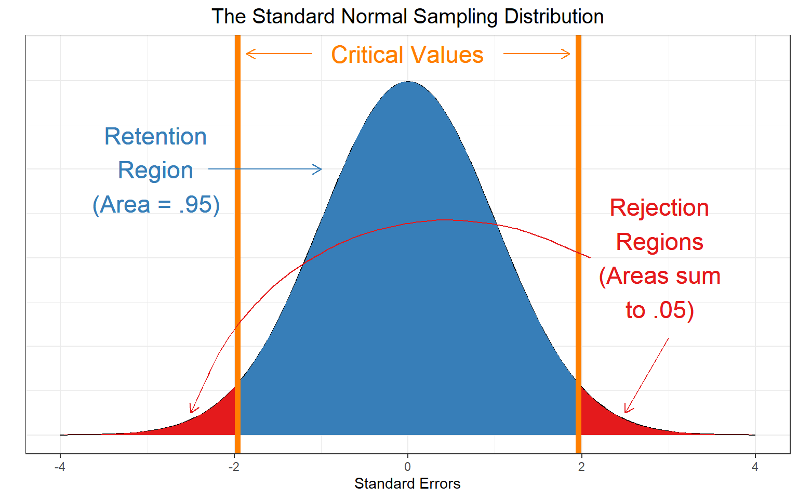
The standard normal distribution is “scale free” (units are standard deviations).
Our Statistic
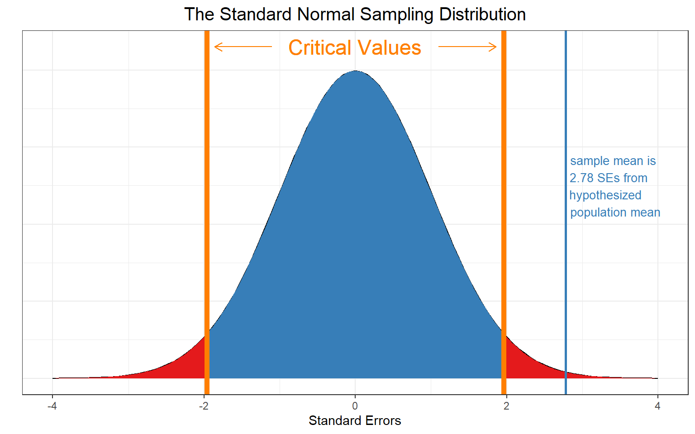
This result would be very surprising if our hypothesis \(\mu = 12\) were true!
NHST
This is the core logic of Null Hypothesis Significance Testing (NHST):
- Propose a sampling distribution
- Collect data
- Calculate a statistic
- Calculate what percentage of statistics would have a magnitude at least as large as the one you collected
- Draw a conclusion
- Ronald Fisher proposed setting \(\alpha = .05\)
- Arbitrary cutoff to decide whether a statistic is surprising enough to conclude the null hypothesis is likely false
- Proper Interpretation: For all true null hypotheses, I’m willing to incorrectly reject them 5% of the time (make Type I Error, more later!)
Back to Gummy Bears
Two Hypotheses
In our gummy bear examples we’ve only thought about Pineapple so far. Now let’s consider each different flavor.
- Equal Categories (EC): All flavors are distributed evenly (\(\frac{1}{5}\) chance each, equiprobable hypothesis)
But I secretly suspect that instead:
- Too many raspberries (TMR): The candymakers are biased in favor of raspberry (\(\frac{1}{3}\) chance) over the other flavors (\(\frac{1}{6} chance each\))
I buy a party sized back of 354 bears and randomly split it into two halves of 177 pieces each to independently test each hypothesis.
Sample 1
Under the EC hypothesis, in repeated samples, my expected frequency of each flavor would be:
\[f_{E1} = f_{E2} = f_{E3} = f_{E4} = f_{E5} = \frac{1}{5}177 = 35.4\]
However, my observed frequencies are:
\[f_{O1} =62,f_{O2} = 26, f_{O3} = 29, = f_{O4} = 28, f_{O5} = 32\]
How unlikely are are observed frequencies under the hypothesis that the expected frequencies are the true frequencies in the population?
Constructing our Sampling Distribution
We could look at how different our observed frequencies are from our expected frequencies, but if we just do that and sum them up, what would happen?
The differences would cancel out to 0!
Instead we are going to look at squared differences
We are also going to normalize the squared differences by dividing by the expected frequencies
For each category, we will calculate \(k\)
\[\frac{(F_{Ok} - F_{Ek})^2}{F_{Ek}}\]
The \(\chi^2\) Distribution
Under the CLT, each of these will separately be distributed standard normal squared
- Take every value in a normal distribution with \(\mu = 0\), \(\sigma = 1\) and square them
The sum of multiple squared random standard normal variables has a known distributional form of it’s own: the \(\chi^2\) distribution.
Any \(\chi^2\) distribution has degrees of freedom equal to the number of elements that can freely vary. of our separate sums can freely vary, assuming we hold the total number of gummy bears (\(N = 177\)) constant?
Once we know the observed frequencies of four of the categories, if the total stays constant, the fifth becomes determined, so we have \(K - 1 = 5 - 1 = 4\) degrees of freedom
The Messy Truth
The \(chi^2\) distribution has the following density function:
\[f_{df}(\chi^2) = \frac{(\frac{1}{2})^{df/2}}{\Gamma(\frac{df}{2})} \chi^{2(df/2 - 1)} e^{-\chi^2/2}\]
- \(df\): degrees of freedom
- \(\Gamma\): the gamma function
Fortunately, we never need to use this equation directly
The sum of \(df\) squared independent standard normal variables follows a \(\chi^2\) distribution with \(df\) degrees of freedom
- The \(\chi^2\) distribution is defined on the interval \([0, \infty]\)
- \(\mathcal{E}(\chi^2) =\) mean \(\chi^2\) value = \(df\)
- \(\text{Var}(\chi^2) = 2df\)
\(\chi^2\) Distributions
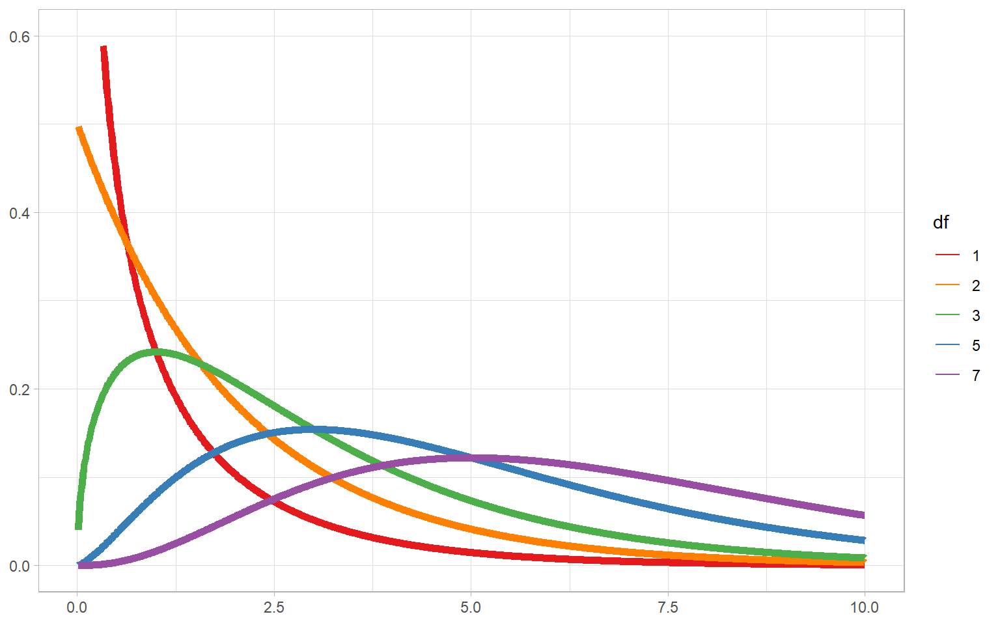
Sampling \(\chi^2\)s
If our EC hypothesis is true, that means that in repeated random samples, if we calculate
\[\chi^2 = \sum_{k=1}^K \frac{(F_{Ok} - F_{Ek})^2}{F_{Ek}}\]
The \(\chi^2\) statistic that results will follow a \(\chi^2\) distribution with \(df = K - 1\)
Under Fisher’s \(\alpha = .05\) convention, if there is less than a 5% chance that we would obtain a \(\chi^2\) statistic at least as large as the one we observe under this distribution, we reject the proposed hypothesis.
\(\chi^2\) Critical Value
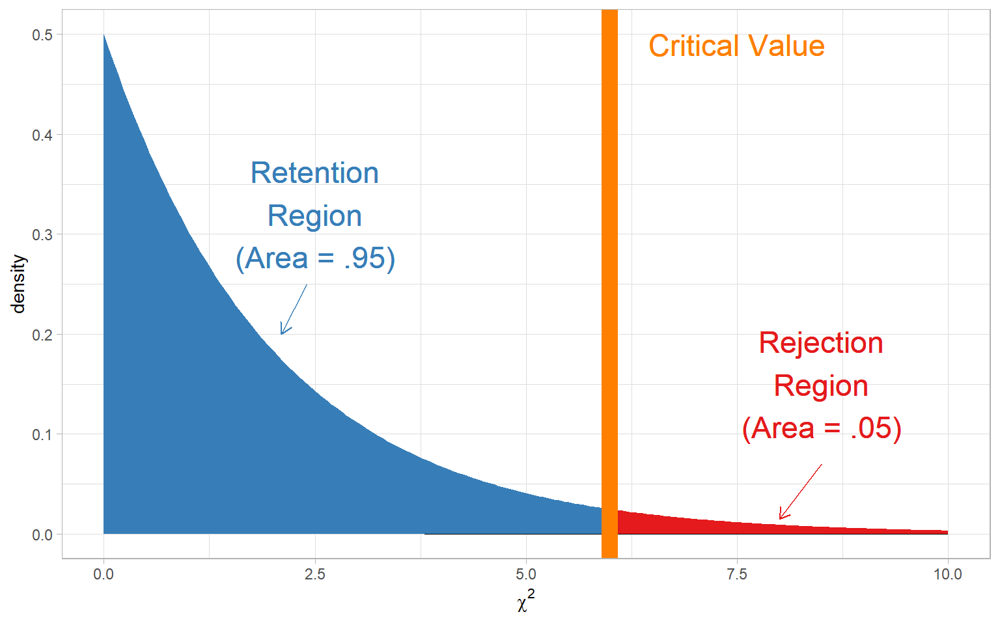
The EC Hypothesis
In my first sample of gummy bears, I have 62 raspberries, 26 pineapples, 29 lemons, 28 oranges, and 32 strawberries
\[\chi^2_{\rm{obs}} = \frac{(62 - 35.4)^2}{35.4} + \frac{(26 - 35.4)^2}{35.4} + \frac{(29 - 35.4)^2}{35.4} + \frac{(28 - 35.4)^2}{35.4} + \frac{(32 - 35.4)^2}{35.4} = {25.51}\]
pchisq(25.51, df = 4, lower.tail = FALSE)[1] 3.972231e-05The probability of obtaining a \(\chi^2\) statistic of at least 25.51 from a \(\chi^2\) distribution with four degrees of freedom is \(3.97 \times 10^{-5}\) (VERY unlikely)
Thus, we reject the EC hypothesis.
EC Visualized
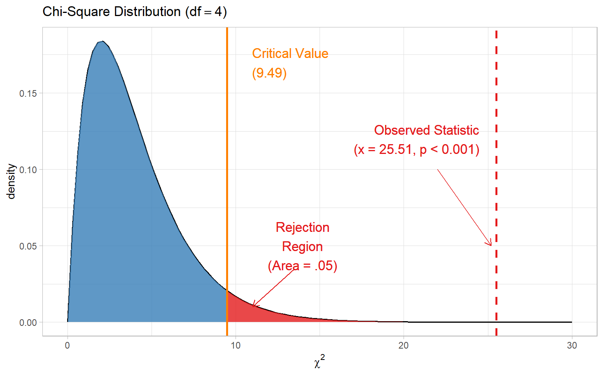
The TMR Hypothesis
- Too many raspberries (TMR): The candymakers are biased in favor of raspberry (\(\frac{1}{3}\) chance) over the other flavors (\(\frac{1}{6} chance each\))
For 177 pieces, what are the expected frequencies in each category
- \(f_{E1} = \frac{1}{3}177 = 59, f_{E2} = f_{E3} = f_{E4} = f_{E5} = \frac{1}{6}177 = 29.5\)
The TMR \(\chi^2\)
Now let’s say I observe
- \(f_{O1} =55,f_{O2} = 29, f_{O3} = 44, = f_{O4} = 30, f_{O5} = 30\)
What is my \(\chi^2\) test statistic?
\[\chi^2_{\rm{obs}} = \frac{(55 - 59)^2}{59} + \frac{(29 - 29.5)^2}{29.5} + \frac{(33 - 29.5)^2}{29.5} + \frac{(30 - 29.5)^2}{29.5} + \frac{(30 - 29.5)^2}{29.5} = {0.712}\]
The TMR \(p\)-value
And what is the probability I would observe a statistic at least this large?
pchisq(0.712, df = 4, lower.tail = FALSE)[1] 0.9498409Thus, we do not reject the TMR hypothesis.
Visualizing the TMR
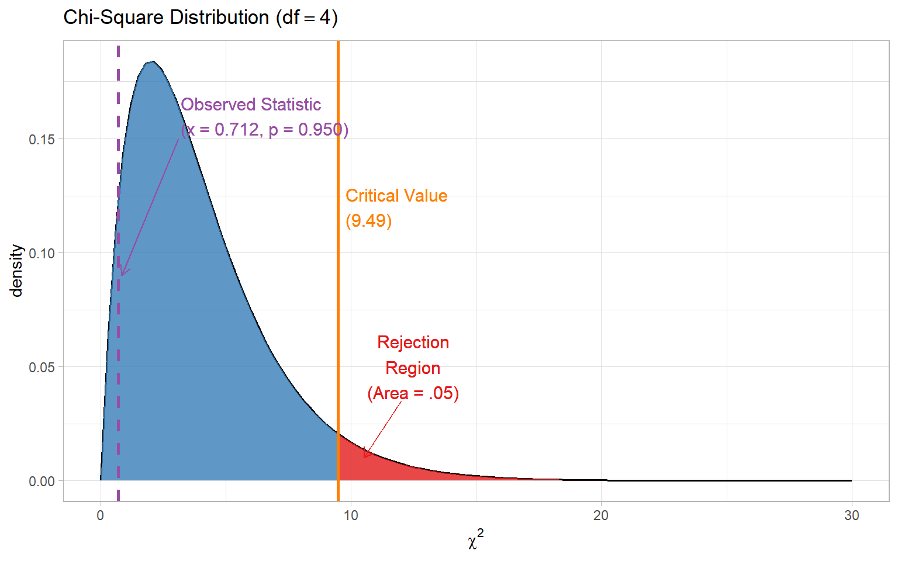
APA Style Writeup
A sample of 177 gummy bears included 62 (35%) raspberry, 26 (15%) pineapple, 29 (16%) lemon, 28 (16%) orange, and 32 (18%) strawberry gummy bears. This distribution of gummy bears is significantly different from the hypothesis that each flavor occurs with equal frequency, \(\chi^2(4) = 25.51, p < .001\).
An independent sample of 177 gummy bears was used to test the hypothesis that raspberry gummy bears occurred twice as often as all other flavors of gummy bears. The second sample of gummy bears (55 (31%) raspberry, 29 (16%) pineapple, 33 (19%) lemon, 30 (17%) orange, 30 (17%) strawberry) is not significantly different from this hypothesis, \(\chi^2(4) = 0.71, p = .95\).
Rejection and Retention
Note: We do not treat this as evidence in favor of our specific TMR hypothesis, why?
What if our TMR hypothesis was 40% raspberry instead of 1/3 Raspberry
\[f_{E1} = .4(177) = 70.80, f_{E2} = f_{E3} = f_{E4} = f_{E5} = .15(177) = 26.55\]
\[\chi^2_{\rm{obs}} = \frac{(55 - 70.8)^2}{70.8} + \frac{(29 - 26.55)^2}{26.55} + \frac{(33 - 26.55)^2}{26.55} + \frac{(30 - 26.55)^2}{26.55} + \frac{(30 - 26.55)^2}{26.55} = {6.22}\]
pchisq(6.22, df = 4, lower.tail = FALSE)[1] 0.1833099There are many hypotheses that data like this would be reasonably consistent with, and our approach does not provide a clear quantifiable way to differentiate them!
The Other TMR
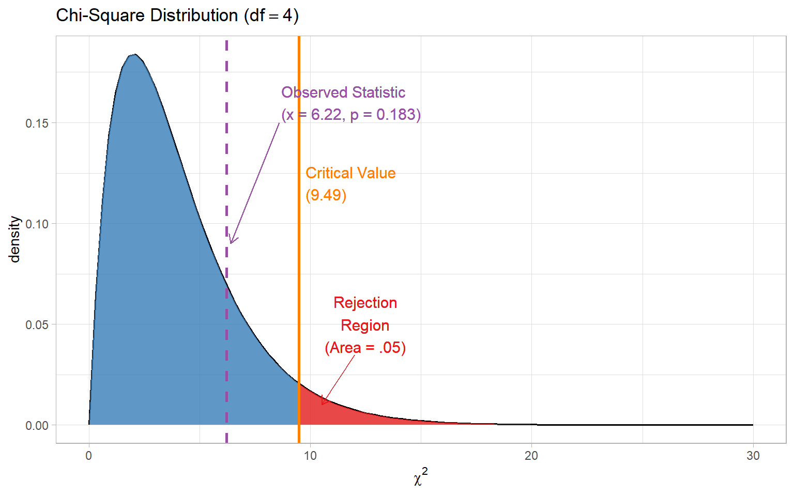
What Can We Say?
- We have evidence against the EC hypothesis
- We failed to find evidence against the TMR hypothesis
- This is evidence that the population is biased towards raspberries in general
- But is the population \(1/3\) raspberry? 40% raspberry?
- We don’t have great evidence differentiating these one way or the other